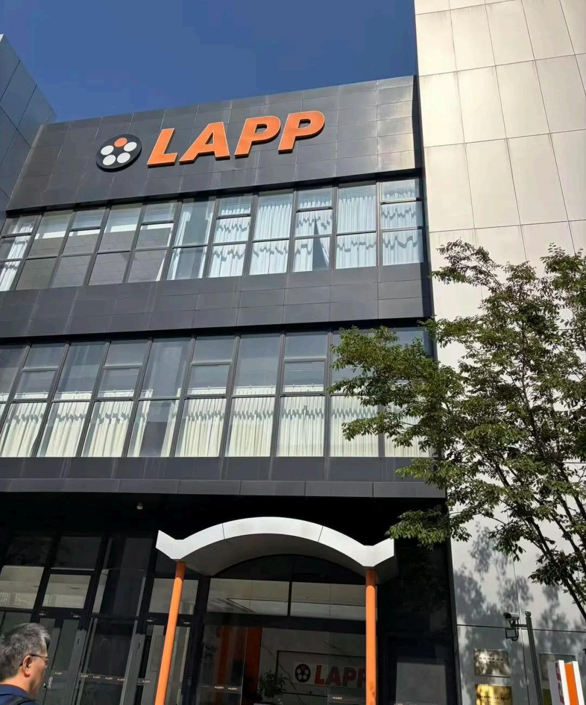
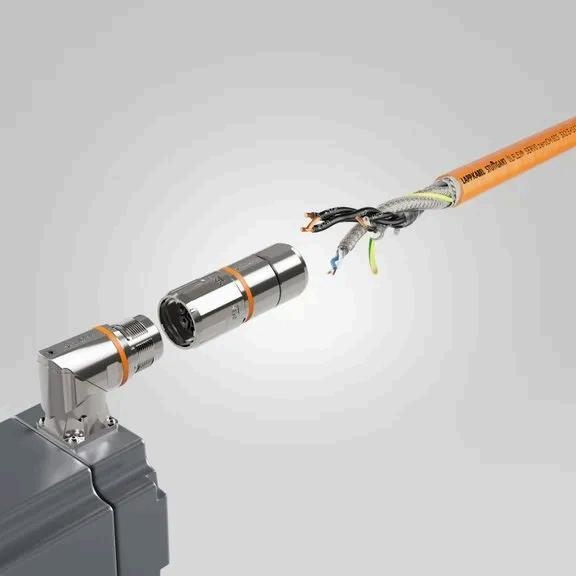
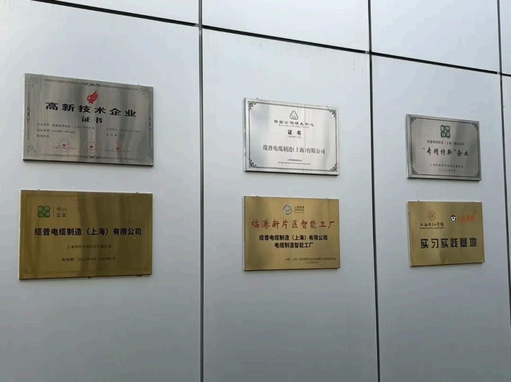
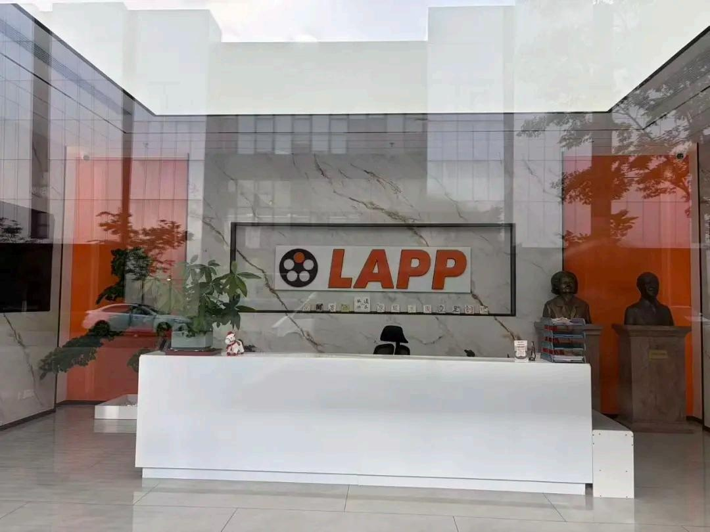

作为工业连接与电缆技术领域的知名企业,LAPP 对品质的执着体现在每一个细节——从原材料到成品,从工艺到检验。此次交流,是一次关于"好产品如何被制造出来"的深度碰撞。

德国制造,是全球品质的标杆;而"品质"二字,正是连接两家企业的共同语言。Inertia 广州易纳团队走进德国企业 LAPP,围绕品质制造的理念、标准与实践展开深入对话,探讨如何将德国品质基因与中国制造能力相结合,为全球客户交付更可靠的产品。
Part 1 品质,不是检查出来的,是制造出来的
交流中,LAPP 的品质理念给团队留下了深刻印象:品质不是靠最终检验"挑"出来的,而是从设计、选材、工艺到生产全流程"造"出来的。这与 Inertia 一直践行的质量观不谋而合——在 Inertia,质量体系不是文件柜里的手册,而是每天运行在车间与检验台上的行为准则。
两家企业虽然在产品领域不同,但对"品质如何而来"的回答高度一致:体系、流程与人的专业,共同决定了一件产品最终的质量。

Part 2 标准、认证与荣誉:品质的可见证据
在 LAPP 的展示区,墙上悬挂的认证与荣誉记录着这家企业数十年对品质的坚持。标准不是束缚,而是让品质可度量、可复现的语言。这与 Inertia 广州易纳持有 ISO 13485:2016 与 ISO 9001 认证的逻辑一致:让每一个制造环节都有标准可依、有记录可查。
品质的国际语言是通用的——无论在中国、加拿大还是德国,一份有效的认证、一套严格执行的体系,都是赢得客户信任的最短路径。


Part 3 从对话到同行:品质制造的共同语言
一次交流的结束,往往是更多可能性的开始。通过与 LAPP 的对话,Inertia 团队对国际品质标准在工业连接领域的应用有了更直观的理解;而 LAPP 也对中国制造企业如何在合规、质量与效率之间取得平衡,有了更具体的认知。
当德国品质基因遇上中国制造能力,双方共同看到的,是一条以品质为共同语言、以标准为合作基线的同行之路。
Capabilities 本次交流印证的能力与理念
- 品质制造理念一致:品质源于全流程体系,而非最终检验——与德国品质观同频
- ISO 13485 / ISO 9001 双认证:以国际标准语言实现品质的可度量与可复现
- 对接国际标准经验:熟悉北美与欧洲客户的质量与合规要求,具备跨标准协作能力
- 跨文化技术沟通:以中加双岸团队为载体,与全球伙伴高效对话
品质,是全世界制造者都能听懂的语言。 感谢 LAPP 的开放交流,期待未来在品质制造之路上有更多同行时刻。